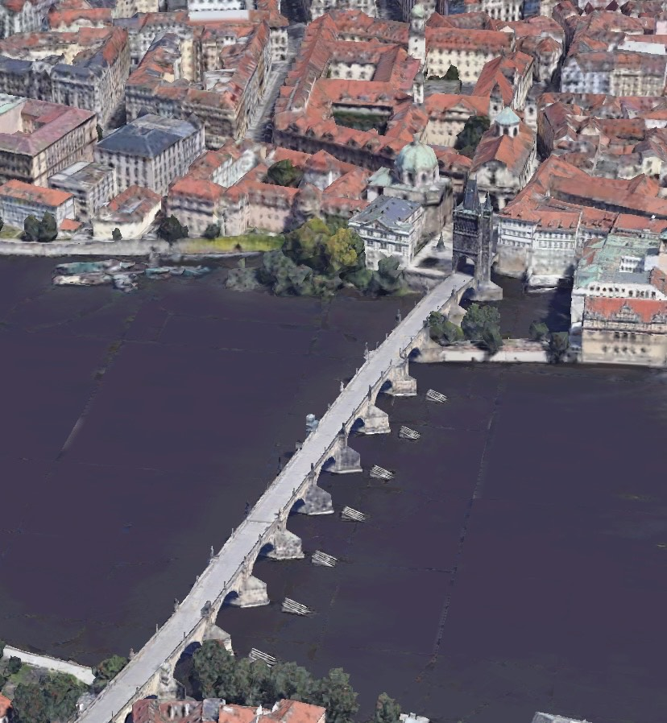

Most Karola (cz. Karlův most, niem. Karlsbrücke) – most na Wełtawie w Pradze czeskiej łączący dzielnice Malá Strana i Staré Město, będący jedną z najsłynniejszych i najczęściej odwiedzanych atrakcji turystycznych miasta.
Most ma prawie 516 m długości i ok. 9,50 m szerokości. Jego 17 łęków spoczywa na 15 filarach. Jest to najstarszy zachowany most kamienny świata o tej rozpiętości przęseł. Początkowo nazywano go Kamiennym lub Praskim Mostem. Nazwa Most Karola przyjęła się dopiero od mniej więcej 1870. Do 1741 roku był jedynym mostem na Wełtawie w mieście. Most jest obecnie otwarty tylko dla ruchu pieszego, choć dawniej kursował po nim tramwaj konny, w latach 1905–1908 tramwaj elektryczny, a do 1965 ruch samochodowy.
Budowę mostu rozpoczęto w 1357 za panowania cesarza Karola IV. Stanął on na miejscu wcześniejszego (również kamiennego) mostu z XII w., zniszczonego przez powódź w 1342. Poprzedni most, romański, nosił nazwę „mostu Judyty” na cześć drugiej żony księcia czeskiego Władysława II i przebiegał na północ od miejsca, w którym znajduje się Most Karola. Posiadał wieże na obu końcach, z których małostrańska, choć przebudowana, istnieje do dziś.
Budowę zlecono 28-letniemu wówczas Peterowi Parlerowi. Dla wzmocnienia konstrukcji do zaprawy dodano białka jajek. W okresie baroku most ozdobiono 30 posągami świętych, dziełami m.in. Matthiasa Bernarda Brauna i rodziny Brokoff (Jan Brokoff, Michał Jan Józef Brokoff, Ferdynand Maksymilian Brokoff). W 1787 ustawiono tu także posąg cesarza Józefa II (projekt ustawienia tu także posągu Karola VI nie został zrealizowany). Na jednej z balustrad umieszczono tablicę pamiątkową poświęconą św. Janowi Nepomucenowi – 20 marca 1393 w tym miejscu według tradycji wrzucono go z rozkazu króla Wacława IV do Wełtawy.
Na wschodnim końcu mostu stoi staromiejska wieża mostowa z umieszczonymi na niej siedzącymi postaciami cesarza Karola IV, jego syna Wacława IV oraz św. Wita, św. Wojciecha i św. Zygmunta. Rzeźby te pochodzą z lat 80. XIV w. Na zachodnim krańcu mostu znajdują się dwie wieże. Początki niższej wieży sięgają jeszcze czasów pierwszego mostu z XII w. Natomiast wyższa wieża została zbudowana dopiero w XV w. za panowania króla Jerzego z Podiebradów jako pendant dla wieży staromiejskiej.
Most mocno ucierpiał podczas powodzi w II połowie XIX wieku – zawaleniu uległo wówczas kilka przęseł (powódź z 1890 zniszczyła m.in. posągi św. Ignacego Loyoli oraz św. Franciszka Ksawerego – pierwszy posąg na most już nie wrócił). Również w czasie powodzi w 2002 istniało realne zagrożenie zniszczenia mostu.
W sierpniu 2007 rozpoczęto, ukończony w listopadzie 2010, kolejny remont połączony z badaniami archeologicznymi. W trakcie badań pojawiło się przypuszczenie, że twórcą mostu był magister pontis, praski mieszczanin Oto lub Otlin, a nie jak sądzono, Peter Parler.